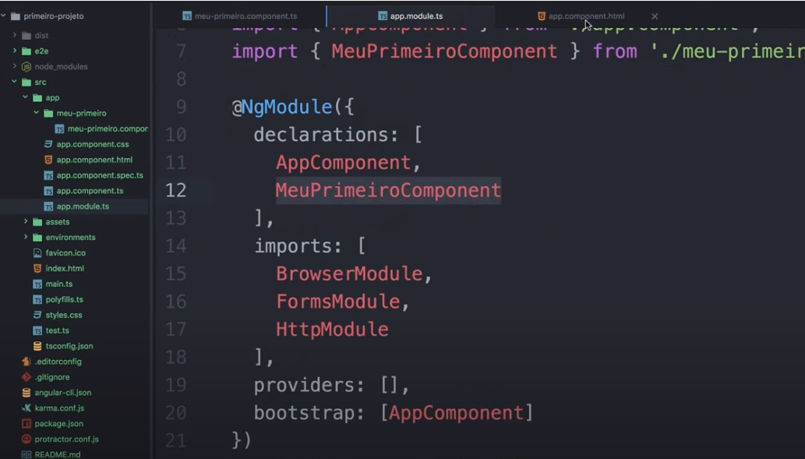
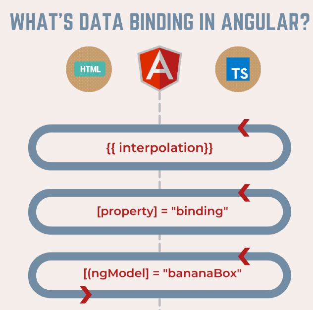
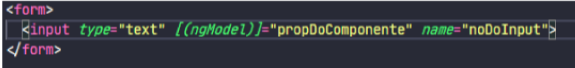

Para criar um componente no mesmo diretório do projeto ola-mundo, penas digite no prompt na pasta do projeto:
ng g componente meu-primeiro
Ele deve ser criado uma pasta em SRC -> App -> meu-primeiro
e depois ser importado no app.module.ts para dar 'conhecimento' ao modulo principal, que existe outro componente.
E se existir no projeto um arquivo app-routing.module.ts, deve ser colocado o path, o caminho para a rota e informado o componente criado.

Depois de criado, o app.module.ts deve ser informado com uma importação.
Data binding
A vinculação de dados é um dos recursos mais poderosos e
importantes em qualquer linguagem de desenvolvimento de software
Ele nos permite definir a comunicação entre o componente e a
visualização Portanto, podemos dizer que a vinculação de dados é
passada de um componente para a visualização e da visualização
para o componente

Figura Data bindings fonte: material Soulcode
Tipos de data binding
o String Interpolation é do tipo one way data binding ou seja, o
dado é apenas apresentado na tela para o usuário, sem alteração do valor
internamente Para fazer essa interpolação, use chaves duplas e dentro dos
chaves duplos, coloque o nome do atributo do componente ou alguma expressão
JavaScript
Property bindig Também sendo um one way data binding o property Binding serve,
principalmente, para atrelar valores de atributos do componente aos atributos de
um elemento HTML ou algum outro componente Para usar o property binding
dentro do elemento que você deseja usá lo, coloque o nome da propriedade entre
colchetes, por exemplo ([ atributoDoComponente Assim, a
propriedade terá o valor do atributo do seu componente
Event binding O Event Binding funciona para ouvir eventos nativos do
HTML ou eventos que podem ser criados pelo programador, executando algum
método do componente Para usar o event binding é necessário que, dentro do
elemento HTML
ou
componente, coloque entre parênteses o nome da função e entre aspas,
coloque a chamada da função que deseja executar
nomeDoEvento metodoDoComponente
Two Way Data Binding O Two Way Data Binding é um tipo especial de binding
onde além do valor do atributo ser apresentado na tela do usuário, caso o valor seja
editado em algum campo de input, o valor será automaticamente alterado internamente
no componente Essa abordagem é muito utilizada para aumentar a interação do
usuário, atualizar dados em tempo real, entre outras coisas É importante salientar que
para usar esse método de Binding é necessário importar o módulo de formulários do
Angular dentro do módulo principal, já que essa abordagem é geralmente utilizada
dentro de formulários Após a importação ser feita, dentro do componente que há o
formulário, dentro do input que deseja usar o TWDB, coloque entre colchetes e
parênteses, respectivamente, a diretiva ngModel como no exemplo abaixo.

Figura- Usando two way data binding Fonte: Soulcode
Note
que dentro do input existe o atributo name Essa propriedade é obrigatória para o
TWDB funcione Sem ela, não será possível fazer a identificação interna do elemento
para poder executar o data Binding O atributo name não precisa ter exatamente o
mesmo nome da propriedade, entretanto, é obrigatório que ele esteja no elemento